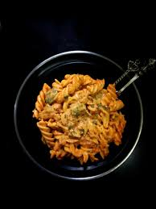

Desi Spicy Pasta Recipe

Ingredients:
- 2 cups pasta (penne, fusilli, or any pasta of your choice)
- Water for boiling
- Salt
- 1 medium onion, finely chopped
- 2 cloves garlic, minced
- 1-inch piece of ginger, grated
- 1 green bell pepper, diced
- 1 red bell pepper, diced
- 1 cup tomatoes, finely chopped (or 1 can diced tomatoes)
- 1/2 cup green peas (fresh or frozen)
- 1 carrot, peeled and diced
- 1/2 cup corn kernels (fresh or frozen)
- 2 tablespoons oil (vegetable oil or olive oil)
- 1 teaspoon cumin seeds
- 1 teaspoon mustard seeds
- 1/2 teaspoon turmeric powder
- 1 teaspoon red chili powder (adjust to taste)
- 1 teaspoon garam masala
- 1 teaspoon coriander powder
- 1 teaspoon cumin powder
- Salt to taste
- Fresh coriander leaves, chopped for garnish
- 1/2 cup paneer cubes, lightly sautéed (optional)
- 1/4 cup grated cheese (mozzarella or cheddar) for topping (optional)
Steps:
- Bring a large pot of water to a boil. Add a generous pinch of salt.
- Add the pasta and cook according to the package instructions until al dente. Drain the pasta, rinse with cold water, and set aside.
- Wash and chop all the vegetables as mentioned in the ingredients list. Keep them ready.
- Heat oil in a large pan or skillet over medium heat.
- Add cumin seeds and mustard seeds. Let them splutter.
- Add the chopped onions and sauté until they turn golden brown.
- Add the minced garlic and grated ginger. Sauté for another minute until fragrant.
- Add turmeric powder, red chili powder, garam masala, coriander powder, and cumin powder. Stir well to mix the spices with the onions.
- Add the chopped tomatoes and cook until they soften and the oil starts to separate from the masala. This may take about 5-7 minutes.
- Add the diced bell peppers, carrots, green peas, and corn kernels. Stir well to coat the vegetables with the masala. Cook for 5-7 minutes until the vegetables are tender but still have a slight crunch.
- Add the cooked pasta to the pan with the vegetables. Mix well to combine. Add salt to taste and stir everything together, ensuring the pasta is well coated with the spicy vegetable mixture.
- If using paneer cubes, lightly sauté them in a separate pan until golden brown, then add them to the pasta.
- If you like cheese, sprinkle grated mozzarella or cheddar on top of the pasta.
- Garnish the desi spicy pasta with fresh chopped coriander leaves.
- Serve the desi spicy pasta hot. You can enjoy it as a main dish or a side.